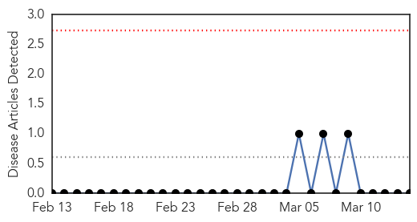
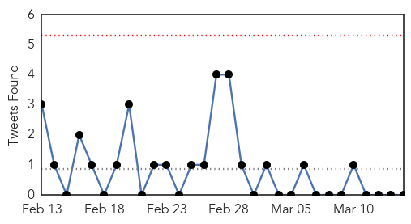

Mumps
30-Day Web Trend
0 alerts, 0 warnings

30-Day Twitter Trend
0 alerts, 0 warnings

Article Locations


Article Confidences

Top Articles:
-
No articles found for Mar 14, 2015
Top Tweets:
-
No tweets found for Mar 14, 2015
Unknown
30-Day Web Trend
1 alerts, 0 warnings

30-Day Twitter Trend
0 alerts, 0 warnings

Article Locations


Article Confidences

Top Articles:
- 0.968
- Parents urged to be vigilant as scarlet fever cases soar
- 0.917
- Chicago Tribune
- 0.917
- Chicago Tribune
- 0.917
- Chicago Tribune
- 0.917
- Chicago Tribune
- 0.910
- The world windows to Thailand
- 0.886
- Three deaths linked to tainted ice cream in Kansas, prompting recall
- 0.866
- Egypt sacks 41 judges for supporting Brotherhood -sources
- 0.837
- UNE researchers at forefront in the mission to squash superbugs
- 0.795
- Wellington Elementary: The Florida Department of Health Palm Beach says it was a norovirus that made students, teachers and adminisrators at the school sick.
- 0.719
- Health department confirms norovirus at Wellington Elementary School
- 0.702
- Salmonella alert issued in Queensland, warn of cracked, dirty eggs
- 0.697
- State investigating illness at Holman
- 0.669
- Blue Bell Ice Cream Linked To Kansas Listeriosis Outbreak
- 0.663
- iafrica.com Cut your family's risk of HPV
- 0.659
- California hospitals improve infection rates, but one form of bacteria is on the rise
- 0.647
- Impact on Water, Sanitation & Hygiene
- 0.616
- Louisiana germ release likely due to lax use of lab garments
- 0.600
- Medical tourism, another drain on the economy
- 0.589
- Louisiana germ release likely due to lax use of lab garments
- 0.586
- New $1 Vaccine Could Save Hundreds of Thousands of Babies
- 0.564
- Zambia’s president recovering after surgery in South Africa
- 0.547
- Vietnam vet's widow settles federal Legionnaire's lawsuit
- 0.545
- Doctors claim first successful penis transplant
- 0.527
- Focus on prevention to ease kidney disease burden
Top Tweets:
-
No tweets found for Mar 14, 2015